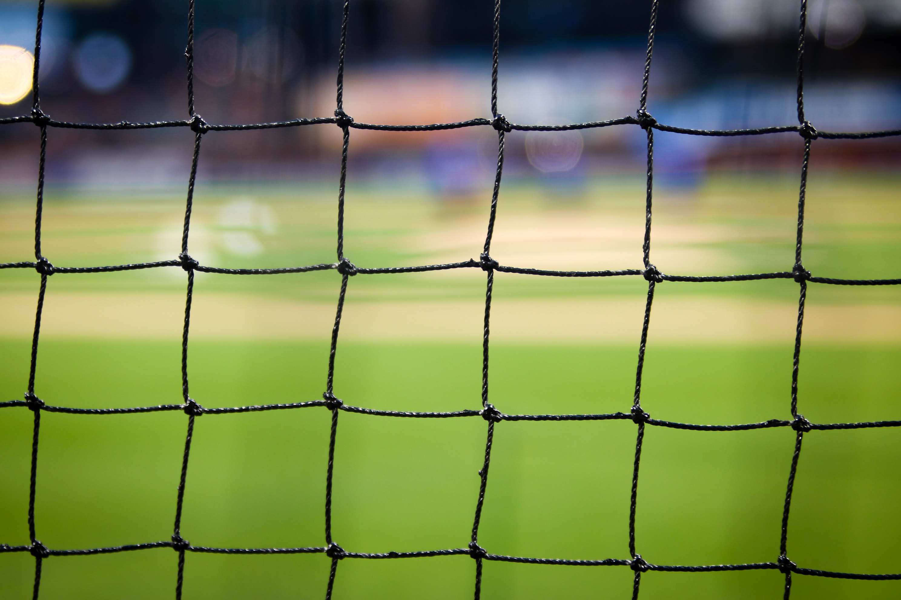

Borussia Dortmund is my favorite team.
Ballspielverein Borussia 09 e.V. Dortmund, commonly known as Borussia Dortmund [boˈʁʊsi̯aː ˈdɔɐ̯tmʊnt],[2] BVB, or simply Dortmund, is a German professional sports club based in Dortmund, North Rhine-Westphalia. It is best known for its men's professional football team, which plays in the Bundesliga, the top tier of the German football league system. The club have won eight league championships, four DFB-Pokals, one UEFA Champions League, one Intercontinental Cup, and one UEFA Cup Winners' Cup.